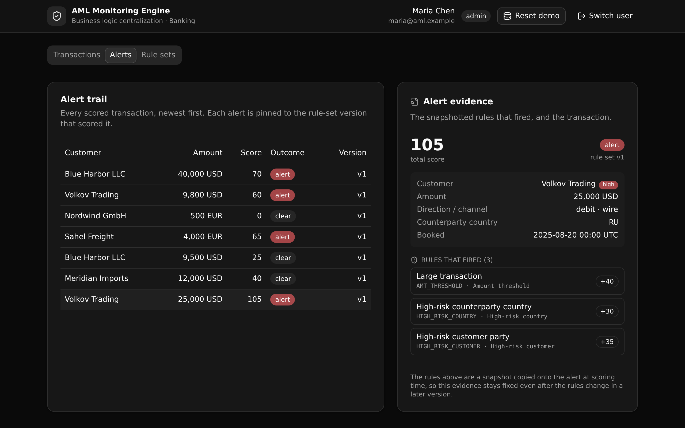

One rule set screens every transaction the same way.
A governed, versioned AML transaction-monitoring API for banks. Post a transaction and get back its risk score, the exact versioned rules that fired, and a queryable alert trail, so every payment rail and case tool screens against one auditable rule set.

What it demonstrates
A bank's monitoring rules usually live in scattered scripts across each channel, so the same transaction can be screened differently depending on where it enters. This template pulls that logic into one governed place.
- The rules are data, not code. Each rule is a row in a versioned rule set (amount threshold, high-risk country list, structuring band, high-risk customer). Tightening a rule is a new version, never a code change.
-
One shared function scores everything. The scoring endpoint and the
demo seed call the same
score_transactionfunction, so sample data and live traffic are screened by the identical rules. - Every alert is explainable. An alert snapshots the version and the exact rules that fired, so the evidence stays fixed even after the rules change later.
- Access is enforced at the API layer by role. Analysts and admins author rules, only admins activate a version, viewers read. The checks live on the endpoints, not on the rows.
Three screens
A React and Vite frontend that derives every path and type from the query defs.
Transactions
List and ingest transactions, then run scoring and see the alert inline: score, outcome, version, and each rule that fired.
Alerts
The alert trail with an evidence panel showing the snapshotted rules, the score, the version, and the transaction behind it.
Rule sets
Every version and its rules. Clone the active set into a draft, tighten a rule, then activate it. The governed, versioned surface.
API surface
All endpoints live under one API group, api:aml. Access is checked on the endpoint.
| Method | Path | Enforces |
|---|---|---|
| POST | /api:aml/auth/login | Verify credentials, mint a Bearer token |
| POST | /api:aml/txn/ingest | Persist a transaction (signed in) |
| POST | /api:aml/score/run | Score against the active version, write an alert (signed in) |
| GET | /api:aml/alerts/detail/{alert_id} | One alert with its snapshotted rules and transaction (signed in) |
| POST | /api:aml/rulesets/draft | Clone the active version into a draft (admin or analyst) |
| POST | /api:aml/rulesets/rule-update | Edit a rule on a draft version only (admin or analyst) |
| POST | /api:aml/rulesets/activate | Activate a draft, retire the prior active (admin only) |
| POST | /api:aml/seed/reset | Reinstall the demo fixture and score it (public bootstrap) |
Plus txn/list, alerts/list, rulesets/list, and
rulesets/rules reads. Twelve endpoints in all.
Use this template
Point your coding agent at the repo, or clone it yourself. You need a free Xano account.
Use the Xano template at
https://github.com/xano-scratch/aml-transaction-monitoring-engine
Clone it, run npm install, then npm run xano:deploy to stand up the
AML transaction-monitoring rules engine in my Xano workspace.Or from a terminal:
git clone https://github.com/xano-scratch/aml-transaction-monitoring-engine.git
cd aml-transaction-monitoring-engine
npm install
npx xanots login # authenticate with Xano (one time)
npm run xano:deploy # builds the frontend, deploys the backend, prints the live URLOpen the printed URL, then click Reset demo data on the sign-in screen to load the customers, transactions, active rule set, and the three role accounts.
npm run xano:deploy for your
own live URL any time.